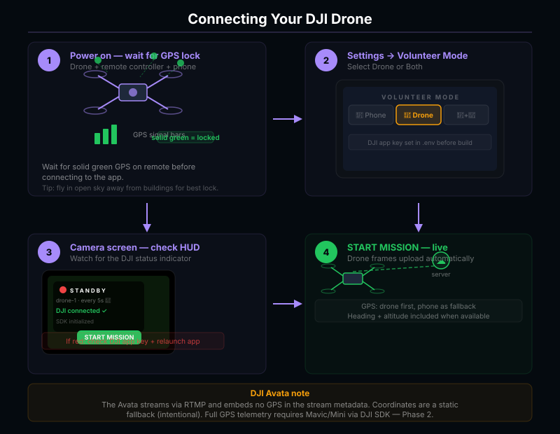

A distributed sensor network
for missing-persons response.
Architecture, scoring engine, FEMA pipeline, mobile runtime, and dashboard.
Idle by default. Activated by IPAWS.
Five active sources feed the alert pipeline — FEMA IPAWS CMAS (5 min), FEMA IPAWS EAS (2 min), NWS Alerts API, NamUs DOJ database (30 min), and a configurable BOLO crawler (15 min). NCMEC RSS (30 min) cross-references missing-child cases against active vehicle targets. Between alerts, the inference pipeline is fully idle — no continuous capture, no always-on scanning. When a qualifying alert fires, volunteers in the affected area are notified and the pipeline activates per-mission.
FEMA IPAWS
CAP XML polled every 5 min. Plate + vehicle profile parsed and written to watchlist.
Volunteers notified
Push to enrolled volunteers in alert polygon. Mount phone, tap START.
Unified worker
Drone RTMP + phone foreground service feed shared frame queue. ALPR + YOLO run per frame.
Composite confidence
5-second window. ALPR + YOLO corroboration. HIGH / PROBABLE / raw classification.
Coordinator gate
Discord webhook fires with full verdict. Human review before any LE notification.
Three planes. Strict boundaries.
Mobile client
React Native 0.81. Foreground Service for background scanning. GPS at ~1Hz.
Drone stream
nginx exec_push pipes JPEG frames into the unified worker. Same path as phone.
DJI MSDK 5.17
Native Kotlin module. Mavic 3, Mini 4 Pro, Air 3, Avata.
API + ingestion
POST /ingest/frame. JWT auth. slowapi rate limiting. Async SQLAlchemy.
Frame pipeline
One process. Shared queue across all sources. ALPR + YOLO + scoring.
Detection store
Events + watchlist + telemetry. Time-windowed retention. No raw video.
5 Active Sources
FEMA CMAS (5 min) · FEMA EAS (2 min) · NWS Alerts API · NamUs DOJ (30 min) · BOLO crawler (15 min) · NCMEC RSS (30 min).
Discord webhook
Rich embed: plate + confidence + frame + vehicle reference photo + match verdict.
Coordinator dashboard
Mapbox dark. /map · /admin · /missions · /leaderboard · /debrief.
One process. One frame queue.
Every source — drone RTMP, phone background service, phase-two DJI MSDK — feeds into the same in-process queue. No duplicated inference paths, no per-source forks. Non-matching frames are deleted from disk immediately after inference. When a HIGH_CONFIDENCE watchlist match fires, one golden evidence frame is saved and attached to the coordinator Discord alert.
Sources
unified_worker.py
pid:worker · pm2-managedFrame queue (asyncio)
Shared across all sources. Backpressure-aware.
OpenALPR — plate text + confidence
Local inference. Fuzzy-matched against watchlist.
YOLOv8-nano — body type + dominant color
HSV K-means on upper 60% of bbox; confidence per frame.
Plate Recognizer (opt-in cloud)
Make/model enrichment on high-confidence reads only.
AggregationService → composite score
5-second window. ALPR + YOLO corroboration. Classification.
Outputs
Composite confidence — not just plate text.
Plate-only ALPR is roughly 30% false-positive in real-world conditions. We score every detection against two independent signals: ALPR text quality and YOLO vehicle corroboration. Both must agree before we open a HIGH_CONFIDENCE event.
Stored on every event as raw_summary.vehicle_corroboration — coordinators inspect exactly what contributed to the score.
Five-second window. Three classifications.
Detections grouped by drone and plate-prefix get fuzzy-matched together inside a five-second sliding window. The window decides whether the event opens for coordinator review, fires Discord, or stays a raw observation.
HIGH_CONFIDENCE
≥ 90.0PROBABLE
≥ 75.0RAW
< 75.0OCR confusion pairs · baked into fuzzy matcher
Five active sources — plus NCMEC cross-reference.
Five background async tasks cover every layer of the US missing-persons alert system. FEMA IPAWS CMAS (5-min) and FEMA IPAWS EAS (2-min) share a single Postgres-backed dedup table so the same alert never fires twice. NWS Alerts API catches WEA-distributed AMBER alerts that bypass the CMAS feed — Georgia uses this path. NamUs pulls the DOJ federal missing persons database every 30 minutes and creates watchlist entries for actionable vehicle cases. The BOLO crawler polls configurable agency feeds — FBI, NCMEC, GBI, ALEA, TBI, county sheriffs — every 15 minutes, plus coordinators can upload screenshots directly. NCMEC RSS covers all 50 state missing-child feeds and fires a Discord cross-reference when a new case overlaps an active vehicle target.
All FEMA pollers share a processed_alerts dedup table — survives PM2 restarts. Every ingested alert is permanently logged to alert_ingestion_log with extracted vehicle profile, pilots notified, and whether Discord fired.
# FEMA CMAS + EAS — 300 s / 120 s, shared processed_alerts dedup async def fema_background_loop(): for alert in parse_cap(await http.get(FEMA_CMAS_URL)): await watchlist.upsert(plate, color, body, make) await dispatcher.notify_volunteers(polygon, cap_code) await log_alert_ingestion(source="fema", ...) # permanent record # NamUs DOJ — every 1800 s (namus_poller.py) async def poll_namus(): cases = await fetch_namus_cases(recent_days=30) for case in filter_actionable(cases): await watchlist.upsert(case.plate, case.vehicle_profile) # BOLO crawler — every 900 s (bolo_crawler.py) async def poll_bolo_sources(): for source in await db.get_active_sources(): posts = await crawl(source) # FBI, GBI, ALEA, TBI, county sheriffs for post in filter_vehicle_data(posts): await watchlist.upsert(post.plate, post.vehicle_profile) # NCMEC — every 1800 s, 50 state feeds in parallel async def poll_ncmec(): for state in US_STATES: cases = parse_feed(await http.get(NCMEC_URL.format(state))) await db.upsert_cases(cases) await cross_ref_vehicle_targets(cases, state)
Push lands → mission start in two taps.

IPAWS-driven · geofenced · single action
When IPAWS issues an alert in the volunteer's polygon, an Expo push notification fires. They see the suspect descriptor, alert ID, last-known direction — and one tap to start.
- 01Geofenced push — only volunteers inside the alert polygon are notified
expo-notifications - 02Suspect descriptor — vehicle make/color/body parsed from CAP and shown verbatim
- 03Single-action start — no menus; tap to enter
CameraScreenwith foreground service running - 04Stand-down on alert clear — IPAWS cancellation deactivates watchlist and fires a Discord stand-down embed; coordinator coordinates wind-down
Lock the phone. Keep scanning.

Android Foreground Service · persistent notification
The flagship piece of the mobile stack. modules/phone-camera runs Camera2 + GPS + upload as an Android Foreground Service so the user can drive with their navigation app open. AA does not need to be visible.
- 01Foreground service — Camera2 +
expo-locationstay alive when screen off / app backgrounded - 02Persistent notification — live frame count + one-tap Stop without unlocking
- 03Per-frame upload — POST
/ingest/framewith GPS attached at ~1Hz - 04Out-of-range warning — fires when volunteer drifts outside the alert polygon
Relinquish your drone. Coordinator takes control.

Power on at home → swarm join → coordinator dispatches
A pilot who can't physically respond still contributes. They power on their drone, open AutonomousMissionScreen, and walk away. The coordinator sees the drone on the map at its home GPS, clicks anywhere on the map to place an observation pin, checks the ADS-B airspace advisory, and dispatches. Pilot taps Accept & Launch — the DJI SDK uploads the waypoint and executes. No pilot on scene required.
- 01Map-click dispatch — coordinator clicks road/corridor on map to drop obs pin; no coordinate typing. ADS-B advisory lists aircraft within 5 nm below 3,000 ft before confirm.
- 02Mission lifecycle —
pending → dispatched → uploading → executing → completed | aborted. Timeout: 30 min unaccepted, 4 h executing. - 03VLOS / BVLOS — VLOS enforces 400 m radius (Part 107). BVLOS Tactical unlocks extended range per drone when admin records FAA waiver number.
- 04Same inference pipeline — drone RTMP → unified worker → ALPR + YOLO → composite score
Live mission map. Dispatch from coverage gaps.

Next.js 14 · Mapbox dark · role-tiered · drone dispatch layer
Coordinators see two layers Flock can't give them: (1) exactly where fixed cameras have zero coverage, and (2) which volunteer drones are online right now and where. Click a drone icon → click anywhere on the map to place the observation pin → check the ADS-B airspace advisory → dispatch. Flock DroneSense costs $3 k–$6 k / drone / year and requires an operator on scene. Ours costs $0 and the pilot can be at home.
- 01Map-click obs placement — click any point on the map to set obs pin; no coordinate entry. ADS-B advisory (OpenSky) lists live air traffic before dispatch confirms.
- 02Swarm layer — amber drone icons at home GPS; grayed after 5 min offline. Click icon to open dispatch modal.
- 03Mission panel — live sidebar panel: every active/recent mission with status, progress bar, and fly-to button
- 04Coverage gap targeting — Flock bucket = 0 cells highlighted inside alert area; NCMEC cross-ref shown in sidebar
What we depend on, and what we own.
Every external dependency was chosen so the system is auditable and self-hostable. The ML stack is open-source end-to-end. Self-hostable on any Ubuntu 20.04+ VPS with PostgreSQL, Node 18+, Python 3.10+.
FEMA IPAWS
CMAS (5 min) + EAS (2 min). CAP XML. AMBER, Silver, Mattie's, Purple, MIPA, Blue.
NCMEC RSS
50 individual state feeds every 30 min. Missing-child cross-reference to active vehicle targets.
OpenSky Network
Live ADS-B air traffic. Airspace advisory in dispatch modal — lists aircraft within 5 nm below 3,000 ft.
OpenALPR + YOLOv8-nano
Local ALPR + body-type classification. HSV K-means for color. All open-source.
Plate Recognizer (opt-in)
Cloud make/model enrichment on high-confidence reads. Quota-conserved.
DJI MSDK 5.17
Native Kotlin. Mavic 3, Mini 4 Pro, Air 3, Avata. Part 107 gated. iOS pending.
Expo + React Native 0.81
Bare workflow. EAS Build cloud — no Mac required for iOS. OTA via expo-updates.
Discord webhooks
Coordinator alerts. Embed: plate + confidence + golden frame + vehicle match verdict.
Twilio SMS (opt-in)
HIGH_CONFIDENCE escalation path. Silently skips if env vars absent. Configured via TWILIO_* vars.
FastAPI + PostgreSQL
Async SQLAlchemy. JWT auth. slowapi rate limit. PM2 supervised.
Next.js 14 + Mapbox
Mapbox GL dark. 7 toggleable map layers. Mission dispatch + swarm panel.
DigitalOcean + nginx
Single Droplet, self-hostable. nginx reverse-proxy. Let's Encrypt TLS. PM2 supervised.
Enforced by the topology, not by policy.
Non-matching frames never leave volunteer phones. On a watchlist hit, one frame uploads as evidence — this is the only phone-to-server frame path. Drone feeds are processed server-side: non-matching frames pass through RAM and are deleted immediately — no accumulation of plate sightings, no non-alert vehicle data. The platform is event-triggered; between alerts, the inference pipeline is fully idle.
When a HIGH_CONFIDENCE watchlist match fires, one golden evidence frame is saved — attached to the coordinator Discord alert inline so they can see exactly what the drone saw. That frame is stored with the detection record. Telemetry purges after 90 days. Detection records and golden frames purge after 1 year. The watchlist holds only plates from active government alerts, never our own sightings database.
Real logs.
June 7, 2026.
Demo AMBER Alert injected. Two volunteers — one phone, one drone — both hit 99% peak confidence on plate YVJ024.